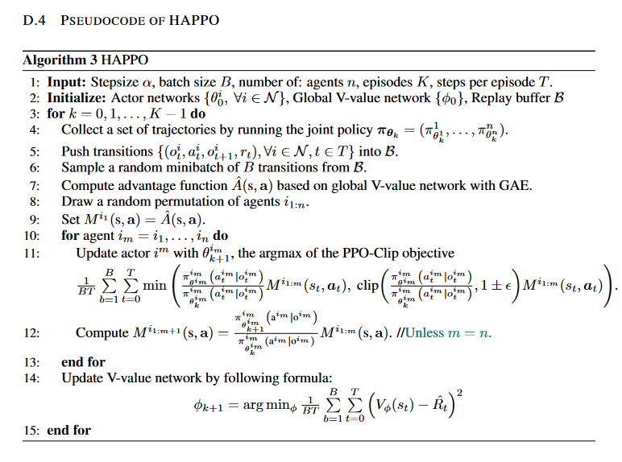
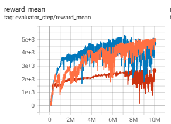
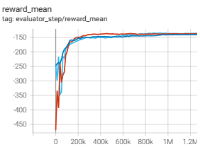

HAPPO¶
概述¶
HAPPO (Heterogeneous-Agent Proximal Policy Optimisation) 是在论文 Trust Region Policy Optimisation in Multi-Agent Reinforcement Learning 中提出的，一种基于信任区域方法 (trust region methods) 的多智能体强化学习算法。 在传统的单智能体强化学习中，信任区域方法被广泛应用，能够保证学习到的策略逐渐改善，从而在各种任务中取得卓越性能。 然而，在多智能体强化学习中，由于各个智能体的策略更新可能存在冲突，传统的单智能体信任区域方法无法简单地应用于协作场景。
HAPPO 算法基于单智能体上的 TRPO 和 PPO 算法 Proximal policy optimization algorithms ，针对多智能体协作场景中的信任区域学习进行了扩展和优化，基于论文中的多智能体优势分解引理 (multi-agent advantage decomposition lemma)，提出了多智能体的顺序策略更新方案 (sequential policy update scheme)。 进而构建了针对多智能体的trust region算法：HATRPO (Heterogenous-Agent Trust Region Policy Optimisation) 和 HAPPO (Heterogeneous-Agent Proximal Policy Optimisation)
核心要点¶
HAPPO 采用了 信任域方法，但不需要智能体共享参数，并且不对联合价值函数的分解性做出任何限制性假设 。
HAPPO 是一种 无模型(model-free)、基于策略(policy-based)、同策略(on-policy) 的多智能体强化学习方法。
HAPPO 支持 离散(discrete)和连续(continuous) 的动作空间。
HAPPO 考虑了 部分可观察(partially observable) 的情景，其中每个智能体的 Actor 网络只获得个体观察。
HAPPO 的神经网络模型中可以使用 RNN 。
关键方程或关键图形¶
多智能体场景下，对于任意有序的智能体子集 \(i_{1:m}=\left( i_1,...,i_m \right)\) 的状态动作值函数定义为：
其中 \(-i_{1:m}\) 表示 \(i_{1:m}\) 的补集，简单来说，这个函数表示如果智能体 \(i_{1:m}\) 在状态 \(s\) 下采取联合行动 \(\mathbf{a}^{i_{1:m}}\) ，平均回报是多少。 在此基础上，定义多智能体优势函数 (Multi-agent Advantage Function) 如下:
该函数将智能体 \(i_{1:m}\) 的联合动作 \(\mathbf{a}^{i_{1:m}}\) 和智能体 \(i_{1:k}\) 的联合动作 \(\mathbf{a}^{i_{1:k}}\) 的平均价值进行比较。 根据 Multi-Agent Advantage Decomposition Lemma，对于任何有序智能体的子集 \(i_{1:m}\) ：
如果每个智能体 \({i_j}\) 都知道智能体 \(i_{1:j-1}\) 做什么，那么它便可以做出动作 \(a^{i_j}_{*}\) ，以最大化自己的multi-agent advantage（其最大值始终为正）。
由于 HAPPO 的近似多智能体信任域目标涉及旧的策略 \({\pi}^{i_m}\) 和候选的策略 \(\hat{\pi}^{i_m}\) ，还涉及多个智能体 \(i_{1:m-1}\) 刚更新的联合策略。 所以使用重要性抽样（importance sampling），智能体 \(i_{1:m-1}\) 已经进行了更新，智能体 \(i_{m}\) 则计算如下 ratio：
所以对于来自旧的联合策略 \(\mathbf\pi^{1:m-1}\) 的数据，计算上述 ratio 即可用于当前策略的训练。
PPO 对 TRPO 做了简化运算；HAPPO 基于同样的道理对 HATRPO 的中二阶微分的编码和计算进行简化，而使用一阶导数。HATRPO 相关由于受约束的HATRPO目标与TRPO具有相同的代数形式，因此可以使用 clip 目标来实现。
其中 \(\frac{\hat{\pi}^{i_m}(a^{i_m}|s)}{{\pi}^{i_m}(a^{i_m}|s)}\) 和 PPO 类似，为智能体 \(i_{m}\) 新旧策略 ratio； 而 \(M_{\mathbf \pi}(s,\mathbf{a})=\frac {\bar {\mathbf \pi }^{i_{1:m-1}}(\mathbf{a}^{i_{1:m-1}}|s)}{\mathbf{\pi}^{i_{1:m-1}}(\mathbf{a}^{i_{1:m-1}}|s)} \cdot A_{\mathbf{\pi}}(s,\mathbf{a})\) ， 其中 \(A_{\mathbf{\pi}}(s,\mathbf{a})\) 是联合优势函数， \(\frac{\bar {\mathbf \pi }^{i_{1:m-1}}(\mathbf{a}^{i_{1:m-1}}|s)}{\mathbf{\pi}^{i_{1:m-1}}(\mathbf{a}^{i_{1:m-1}}|s)}\) 为智能体 \(i_{1:m-1}\) 新旧联合策略的 ratio。
这样可以确保进行小步幅地策略更新。clip目标对于策略参数是可微的，所以我们所要做的就是初始化 \(\theta^{i_m}=\theta_{old}^{i_m}\) ，并多次进行更新。
其他关于 PPO 的细节可见 PPO 文档 。
算法伪代码¶
{kind=link}
HAPPO 也可以选择在模型中加入 RNN 。
实现¶
算法的默认设置如下：
- class ding.policy.happo.HAPPOPolicy(cfg: EasyDict, model: Module | None = None, enable_field: List[str] | None = None)[source]¶
- Overview:
Policy class of on policy version HAPPO algorithm. Paper link: https://arxiv.org/abs/2109.11251.
HAPPO 使用的网络接口定义如下，其中包含了 n_agent 个的 model：
- class ding.model.template.havac.HAVAC(agent_obs_shape: int | SequenceType, global_obs_shape: int | SequenceType, action_shape: int | SequenceType, agent_num: int, use_lstm: bool = False, lstm_type: str = 'gru', encoder_hidden_size_list: SequenceType = [128, 128, 64], actor_head_hidden_size: int = 64, actor_head_layer_num: int = 2, critic_head_hidden_size: int = 64, critic_head_layer_num: int = 1, action_space: str = 'discrete', activation: Module | None = ReLU(), norm_type: str | None = None, sigma_type: str | None = 'independent', bound_type: str | None = None, res_link: bool = False)[source]
- Overview:
The HAVAC model of each agent for HAPPO.
- Interfaces:
__init__,forward
- forward(agent_idx, input_data, mode)[source]
Define the computation performed at every call.
Should be overridden by all subclasses.
Note
Although the recipe for forward pass needs to be defined within this function, one should call the
Moduleinstance afterwards instead of this since the former takes care of running the registered hooks while the latter silently ignores them.
而单个智能体的 model 与 PPO 的类似：
- class ding.model.template.havac.HAVACAgent(agent_obs_shape: int | SequenceType, global_obs_shape: int | SequenceType, action_shape: int | SequenceType, use_lstm: bool = False, lstm_type: str = 'gru', encoder_hidden_size_list: SequenceType = [128, 128, 64], actor_head_hidden_size: int = 64, actor_head_layer_num: int = 2, critic_head_hidden_size: int = 64, critic_head_layer_num: int = 1, action_space: str = 'discrete', activation: Module | None = ReLU(), norm_type: str | None = None, sigma_type: str | None = 'happo', bound_type: str | None = None, res_link: bool = False)[source]
- Overview:
The HAVAC model of each agent for HAPPO.
- Interfaces:
__init__,forward,compute_actor,compute_critic,compute_actor_critic
- compute_actor(inputs: Dict, inference: bool = False) Dict[source]
- Overview:
Execute parameter updates with
'compute_actor'mode Use encoded embedding tensor to predict output.- Arguments:
- inputs (
torch.Tensor):
- input data dict with keys [‘obs’(with keys [‘agent_state’, ‘global_state’, ‘action_mask’]),
‘actor_prev_state’]
- Returns:
- outputs (
Dict):Run with encoder RNN(optional) and head.
- ReturnsKeys:
logit (
torch.Tensor): Logit encoding tensor.actor_next_state:
hidden_state
- Shapes:
logit (
torch.FloatTensor): \((B, N)\), where B is batch size and N isaction_shapeactor_next_state: (B,)
hidden_state:
- Examples:
- compute_actor_critic(inputs: Dict, inference: bool = False) Dict[source]
- Overview:
Execute parameter updates with
'compute_actor_critic'mode Use encoded embedding tensor to predict output.- Arguments:
- inputs (:dict): input data dict with keys
[‘obs’(with keys [‘agent_state’, ‘global_state’, ‘action_mask’]), ‘actor_prev_state’, ‘critic_prev_state’(when you are using rnn)]
- Returns:
- outputs (
Dict):Run with encoder and head.
- ReturnsKeys:
logit (
torch.Tensor): Logit encoding tensor, with same size as inputx.value (
torch.Tensor): Q value tensor with same size as batch size.- Shapes:
logit (
torch.FloatTensor): \((B, N)\), where B is batch size and N isaction_shapevalue (
torch.FloatTensor): \((B, )\), where B is batch size.- Examples:
Note
compute_actor_criticinterface aims to save computation when shares encoder. Returning the combination dictionry.
- compute_critic(inputs: Dict, inference: bool = False) Dict[source]
- Overview:
Execute parameter updates with
'compute_critic'mode Use encoded embedding tensor to predict output.- Arguments:
- inputs (
Dict):
- input data dict with keys [‘obs’(with keys [‘agent_state’, ‘global_state’, ‘action_mask’]),
‘critic_prev_state’(when you are using rnn)]
- Returns:
- outputs (
Dict):Run with encoder [rnn] and head.
- Necessary Keys:
value (
torch.Tensor): Q value tensor with same size as batch size.logits
- Shapes:
value (
torch.FloatTensor): \((B, )\), where B is batch size.logits
- Examples:
- forward(inputs: Tensor | Dict, mode: str) Dict[source]
- Overview:
Use encoded embedding tensor to predict output. Parameter updates with VAC’s MLPs forward setup.
- Arguments:
- Forward with
'compute_actor'or'compute_critic':
- inputs (
torch.Tensor):The encoded embedding tensor, determined with given
hidden_size, i.e.(B, N=hidden_size). Whetheractor_head_hidden_sizeorcritic_head_hidden_sizedepend onmode.- Returns:
- outputs (
Dict):Run with encoder and head.
- Forward with
'compute_actor', Necessary Keys:
logit (
torch.Tensor): Logit encoding tensor, with same size as inputx.- Forward with
'compute_critic', Necessary Keys:
value (
torch.Tensor): Q value tensor with same size as batch size.- Shapes:
inputs (
torch.Tensor): \((B, N)\), where B is batch size and N correspondinghidden_sizelogit (
torch.FloatTensor): \((B, N)\), where B is batch size and N isaction_shapevalue (
torch.FloatTensor): \((B, )\), where B is batch size.- Actor Examples:
- Critic Examples:
- Actor-Critic Examples:
Benchmark¶
environment |
best mean reward |
evaluation results |
config link |
comparison |
|---|---|---|---|---|
Halfcheetah (Halfcheetah-v2) |
5356 |
 | ||
Simple-spread (simple_spread_v2) |
-136.8 |
 |
引用¶
Kuba, Jakub Grudzien, et al. “Trust region policy optimisation in multi-agent reinforcement learning.” arXiv preprint arXiv:2109.11251 (2021).
Schulman, John, et al. “Proximal policy optimization algorithms.” arXiv preprint arXiv:1707.06347 (2017).
其他开源实现¶
TRPO-in-MARL